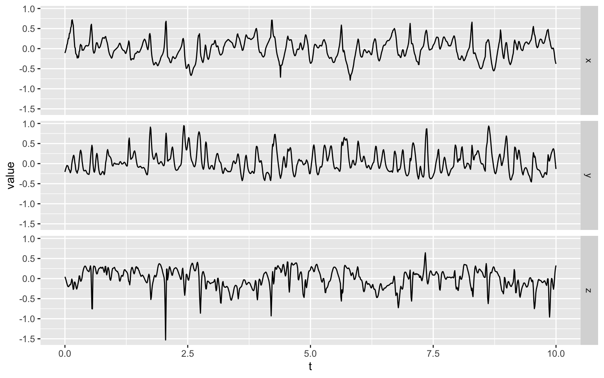
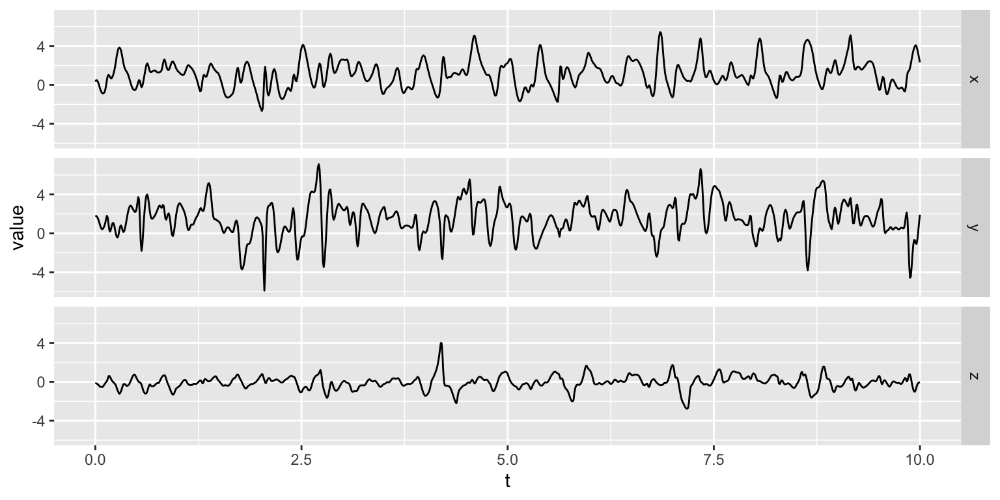
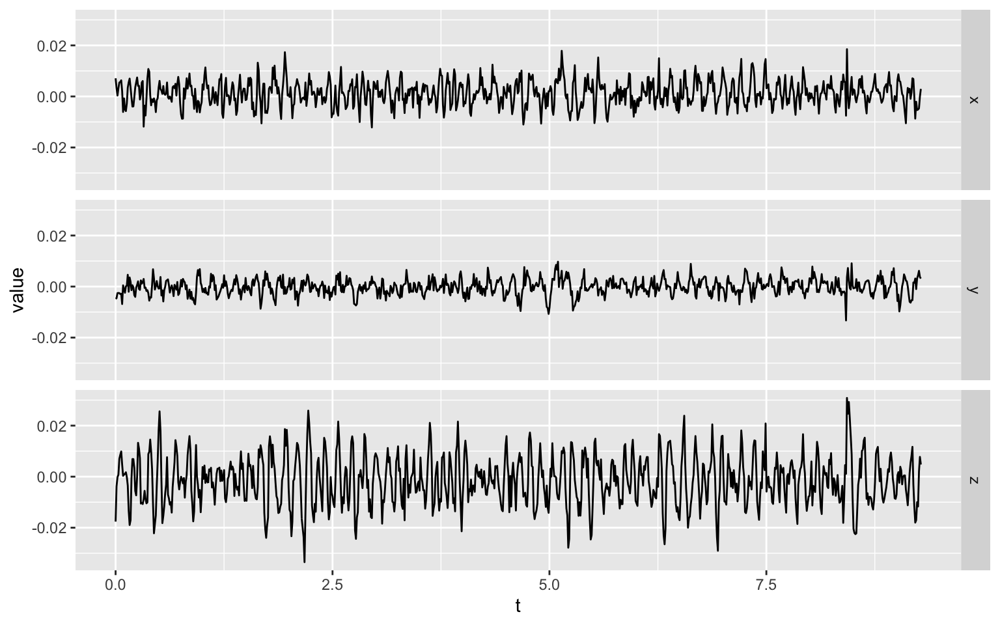
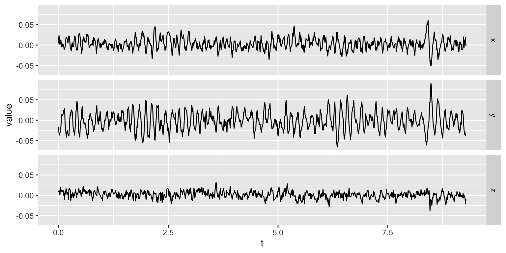
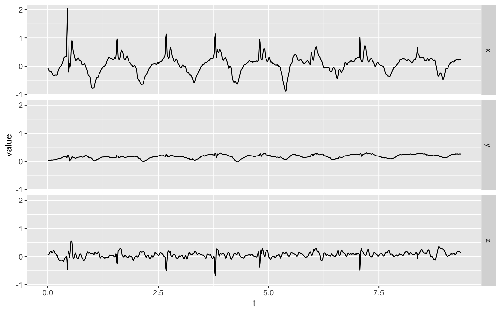
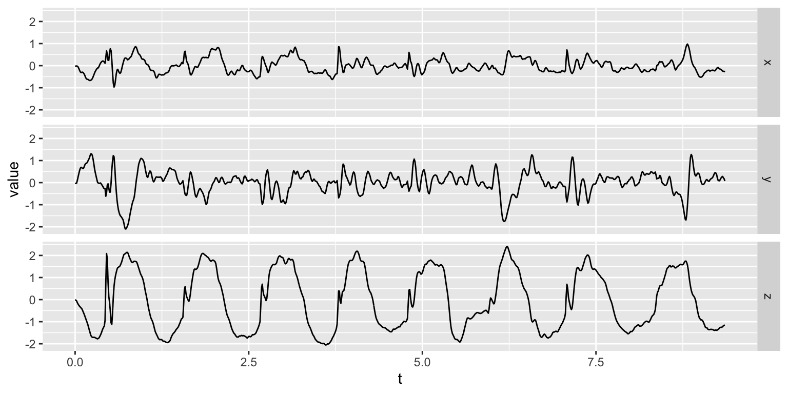
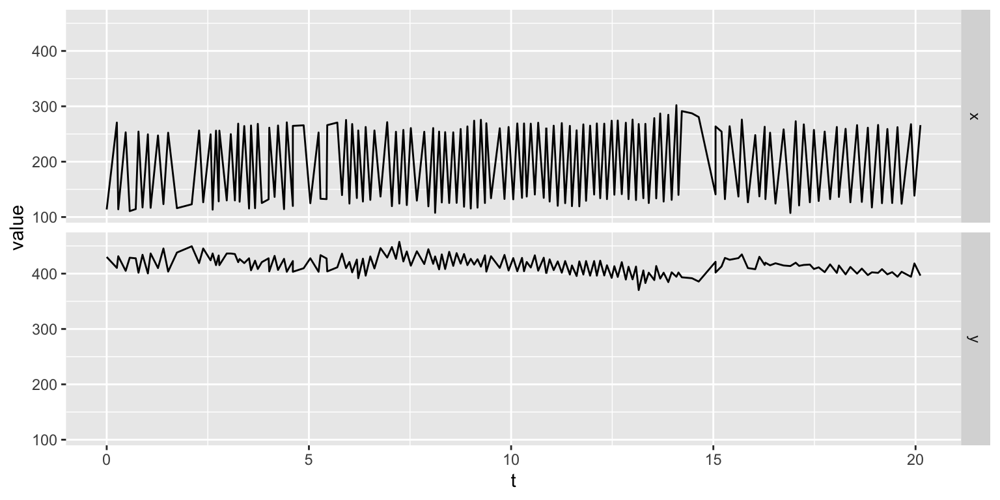
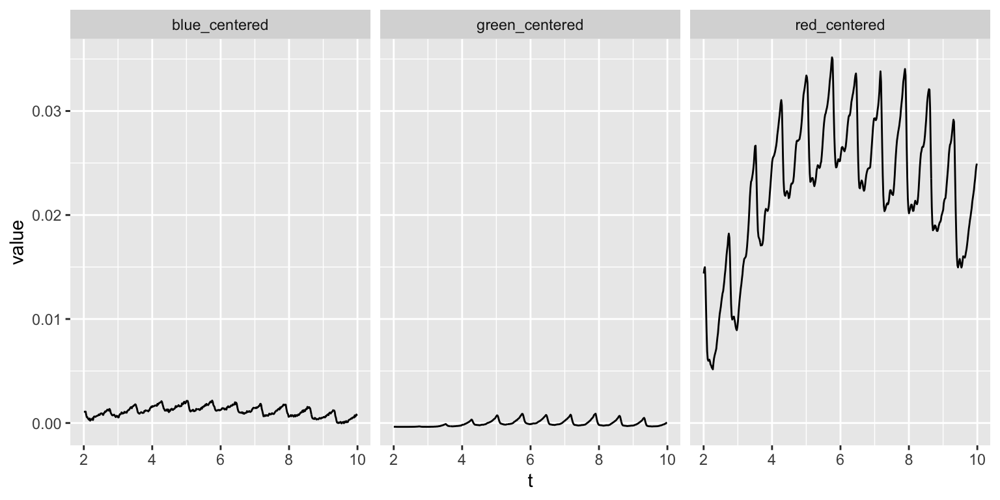

mhealthtools was built to help people study the physiological symptoms that can be tracked through the sensors of the modern day smartphone. This can be the tremor in your hand using the accelerometer and gyroscope sensors while holding the phone in your hand; or Bradykinesia and Dyskinesia through the acceleremeter and gyroscope sensors while having the phone in the front pocket of your pants as you walk; or heartrate using the camera with your finger against it. Whatever the experiment design (activity), if it uses smartphone sensors, you can use mhealthtools to extract useful and sometimes physiologically meaningful features.
Here we describe the use of mhealthtools for certain modules, that are taken from the mPower study run by Sage Bionetworks. For further reading please refer to the article published in nature.
Let’s load the package before we proceed
In this activity, the participant is asked to keep the phone in his/her pants’ front pocket (if not in the waistband of the pants) and then walk in a straight line for some fixed amount of time (e.g. 30s). For someone with Parkinson’s we expect to see symptoms of Dyskinesia and Bradykinesia.
The features extracted from get_walk_features do capture to some extent the effects of those symptoms. In the default processing, the signal is broken down into two IMFs (Intrinsic Mode Functions) using the Hilbert Huang Transform before being analyzed.
mhealthtools comes with preloaded sample walk data from the mpower study. Let’s take a look at the walk data before we proceed to analyze it.
dplyr::glimpse(walk_data)
#> Observations: 2,991
#> Variables: 6
#> $ attitude <df[,4]> <data.frame[26 x 4]>
#> $ timestamp <dbl> 0.000000, 0.009980, 0.019989, 0.029999, 0.039978, 0.…
#> $ rotationRate <df[,3]> <data.frame[26 x 3]>
#> $ userAcceleration <df[,3]> <data.frame[26 x 3]>
#> $ gravity <df[,3]> <data.frame[26 x 3]>
#> $ magneticField <df[,4]> <data.frame[26 x 4]>Let’s look at the accelerometer data – userAcceleration (plotting only the first ten seconds)
library(ggplot2)
a <- walk_data$userAcceleration
a$t <- walk_data$timestamp
a <- tidyr::gather(a, 'axis' , 'value', -t)
a <- a %>% dplyr::filter(t<10)
ggplot(a, aes(x = t, y= value)) +
geom_line() +
facet_wrap(~axis, dir = 'v', strip.position = 'right')
Let’s look at the gyroscope data – rotationRate (plotting only the first ten seconds)
library(ggplot2)
a <- walk_data$rotationRate
a$t <- walk_data$timestamp
a <- tidyr::gather(a, 'axis' , 'value', -t)
a <- a %>% dplyr::filter(t<10)
ggplot(a, aes(x = t, y= value)) +
geom_line() +
facet_wrap(~axis, dir = 'v', strip.position = 'right')
Let’s get both the accelerometer and gyroscope data into the required format before we extract features from it using get_walk_features.
walk_accelerometer_data <- walk_data$userAcceleration
walk_accelerometer_data$t <- walk_data$timestamp
walk_gyroscope_data <- walk_data$rotationRate
walk_gyroscope_data$t <- walk_data$timestampNow let’s get the default walk features.
walk_features <- get_walk_features(accelerometer_data = walk_accelerometer_data,
gyroscope_data = walk_gyroscope_data)
# Using the default settingsThe output file is a list containing features extracted using default functions ($extracted_features), features calculated using models ($model_features) and an element for error ($error). Let’s look at the $extracted_features to see how the default features look like
dplyr::glimpse(walk_features$extracted_features)
#> Observations: 264
#> Variables: 92
#> Groups: axis, IMF, window [132]
#> $ sensor <chr> "accelerometer", "accelerometer", "accelerometer", …
#> $ measurementType <chr> "acceleration", "acceleration", "acceleration", "ac…
#> $ axis <chr> "x", "x", "x", "x", "x", "x", "x", "x", "x", "x", "…
#> $ IMF <int> 1, 1, 1, 1, 1, 1, 1, 1, 1, 1, 1, 1, 1, 1, 1, 1, 1, …
#> $ window <int> 1, 2, 3, 4, 5, 6, 7, 8, 9, 10, 11, 12, 13, 14, 15, …
#> $ mean.tm <dbl> -0.0008031012, -0.0032602160, -0.0013458405, -0.003…
#> $ median.tm <dbl> -6.378011e-04, -2.697079e-04, -6.231662e-04, -2.007…
#> $ mode.tm <dbl> -0.1698518, -0.1744849, -0.1381790, -0.1992032, -0.…
#> $ mx.tm <dbl> 0.15887744, 0.17725426, 0.12389667, 0.17576524, 0.1…
#> $ mn.tm <dbl> -0.1698518, -0.1744849, -0.1381790, -0.1992032, -0.…
#> $ sd.tm <dbl> 0.04899779, 0.05193356, 0.04085500, 0.05019670, 0.0…
#> $ skewness.tm <dbl> 0.209990620, -0.190365120, -0.038069910, -0.1489231…
#> $ kurtosis.tm <dbl> 1.8216223, 2.2533610, 1.9927607, 4.0330045, 2.42489…
#> $ Q25.tm <dbl> -0.015915448, -0.018910526, -0.015434513, -0.021973…
#> $ Q75.tm <dbl> 0.012448478, 0.015870123, 0.012315012, 0.014124171,…
#> $ range.tm <dbl> 0.3287292, 0.3517392, 0.2620756, 0.3749684, 0.27438…
#> $ rough.tm <dbl> 0.15023111, 0.27397501, 0.31736130, 0.21669384, 0.1…
#> $ rugo.tm <dbl> 0.02918967, 0.03532039, 0.02893013, 0.02840218, 0.0…
#> $ energy.tm <dbl> 0.6123650, 0.6904801, 0.4260922, 0.6448993, 0.38536…
#> $ mobility.tm <dbl> 59.71780, 68.17555, 70.98324, 56.71885, 61.31597, 5…
#> $ mtkeo.tm <dbl> 0.0014149224, 0.0019654313, 0.0010558534, 0.0011931…
#> $ dfa.tm <dbl> 0.3770761, 0.3638755, 0.4455989, 0.4630625, 0.39347…
#> $ rmsmag.tm <dbl> 0.04890860, 0.05193446, 0.04079734, 0.05019101, 0.0…
#> $ IQR.tm <dbl> -0.02836393, -0.03478065, -0.02774953, -0.03609772,…
#> $ complexity.tm <dbl> 83.35570, 93.02815, 122.23952, 102.88604, 98.35295,…
#> $ mn.fr <dbl> 8.868570, 10.346153, 10.083378, 8.061172, 8.956587,…
#> $ mx.fr <dbl> 0.019086869, 0.019679752, 0.009513804, 0.029780054,…
#> $ sd.fr <dbl> 4.344314, 4.716089, 7.690070, 5.485321, 5.267110, 4…
#> $ sem.fr <dbl> 0.19428361, 0.21090991, 0.34391037, 0.24531103, 0.2…
#> $ md.fr <dbl> 8.520918, 9.523379, 8.921902, 6.515996, 7.718949, 6…
#> $ mod.fr <dbl> 8.520918, 9.222641, 9.222641, 6.315504, 8.019687, 6…
#> $ Q25.fr <dbl> 6.816734, 8.119934, 5.714027, 5.613781, 5.814273, 4…
#> $ Q75.fr <dbl> 10.225101, 11.628547, 11.929285, 8.420672, 10.02460…
#> $ IQR.fr <dbl> 3.408367, 3.508613, 6.215258, 2.806891, 4.210336, 4…
#> $ cent.fr <dbl> 8.868570, 10.346153, 10.083378, 8.061172, 8.956587,…
#> $ skew.fr <dbl> 2.7704827, 2.8800949, 1.4138560, 3.9579086, 2.38715…
#> $ kurt.fr <dbl> 10.495027, 10.980161, 3.714823, 19.337454, 7.491719…
#> $ sfm.fr <dbl> 0.089606480, 0.145213070, 0.340779843, 0.167656098,…
#> $ sh.fr <dbl> 0.8009325, 0.8058084, 0.8706496, 0.7784478, 0.80388…
#> $ ewt.permEnt.fr <dbl> 0.1165644969, 0.0436681098, 0.3637662359, 0.0446636…
#> $ ewt.shannonEnt.fr <dbl> 0.1165644969, 0.0436681098, 0.3637662359, 0.0446636…
#> $ ewt.simpsonEnt.fr <dbl> 5.458081e-02, 1.634447e-02, 2.324441e-01, 1.675756e…
#> $ ewt.renyiEnt.fr <dbl> 5.108887e-02, 1.500030e-02, 2.407983e-01, 1.538264e…
#> $ ewt.tsallisEnt.fr <dbl> 1.1105298, 1.0849375, 1.4455592, 1.1025870, 2.75861…
#> $ EnergyInBand1 <dbl> 0.0008864663, 0.0004252205, 0.0014912484, 0.0006475…
#> $ EnergyInBand1_5 <dbl> 0.0009161476, 0.0004448356, 0.0015253494, 0.0007100…
#> $ EnergyInBand2 <dbl> 0.0009591023, 0.0004730107, 0.0015725410, 0.0008070…
#> $ EnergyInBand2_5 <dbl> 0.0010184772, 0.0005116088, 0.0016340377, 0.0009544…
#> $ EnergyInBand3 <dbl> 0.0010989436, 0.0005633928, 0.0017114044, 0.0011814…
#> $ EnergyInBand3_5 <dbl> 0.0012074158, 0.0006324383, 0.0018065586, 0.0015430…
#> $ EnergyInBand4 <dbl> 0.0013542336, 0.0007248044, 0.0019217349, 0.0021495…
#> $ EnergyInBand4_5 <dbl> 0.0015551123, 0.0008496416, 0.0020593703, 0.0032328…
#> $ EnergyInBand5 <dbl> 0.001834345, 0.001021046, 0.002221837, 0.005261835,…
#> $ EnergyInBand5_5 <dbl> 0.002229833, 0.001261189, 0.002410902, 0.008734095,…
#> $ EnergyInBand6 <dbl> 0.002799798, 0.001605531, 0.002626750, 0.011697586,…
#> $ EnergyInBand6_5 <dbl> 0.003625980, 0.002110836, 0.002866354, 0.009854174,…
#> $ EnergyInBand7 <dbl> 0.0047867250, 0.0028639954, 0.0031210988, 0.0061899…
#> $ EnergyInBand7_5 <dbl> 0.0062172406, 0.0039748281, 0.0033739734, 0.0038210…
#> $ EnergyInBand8 <dbl> 0.0074011309, 0.0054849150, 0.0035976034, 0.0025402…
#> $ EnergyInBand8_5 <dbl> 0.0074548713, 0.0070731909, 0.0037557313, 0.0018277…
#> $ EnergyInBand9 <dbl> 0.0062719266, 0.0078439593, 0.0038109693, 0.0014070…
#> $ EnergyInBand9_5 <dbl> 4.727010e-03, 7.214504e-03, 3.738402e-03, 1.145626e…
#> $ EnergyInBand10 <dbl> 3.457030e-03, 5.799924e-03, 3.538197e-03, 9.776878e…
#> $ EnergyInBand10_5 <dbl> 2.568138e-03, 4.425284e-03, 3.237593e-03, 8.686896e…
#> $ EnergyInBand11 <dbl> 1.972648e-03, 3.381615e-03, 2.879820e-03, 7.994415e…
#> $ EnergyInBand11_5 <dbl> 1.573654e-03, 2.646699e-03, 2.508024e-03, 7.587837e…
#> $ EnergyInBand12 <dbl> 1.302902e-03, 2.133913e-03, 2.154218e-03, 7.398683e…
#> $ EnergyInBand12_5 <dbl> 1.117065e-03, 1.770466e-03, 1.836458e-03, 7.380246e…
#> $ EnergyInBand13 <dbl> 9.891482e-04, 1.506435e-03, 1.561473e-03, 7.492346e…
#> $ EnergyInBand13_5 <dbl> 9.020890e-04, 1.309107e-03, 1.328847e-03, 7.687373e…
#> $ EnergyInBand14 <dbl> 8.446351e-04, 1.156963e-03, 1.134556e-03, 7.896774e…
#> $ EnergyInBand14_5 <dbl> 8.086155e-04, 1.035523e-03, 9.732687e-04, 8.023453e…
#> $ EnergyInBand15 <dbl> 7.868650e-04, 9.347916e-04, 8.395972e-04, 7.953536e…
#> $ EnergyInBand15_5 <dbl> 7.714056e-04, 8.477555e-04, 7.286738e-04, 7.598484e…
#> $ EnergyInBand16 <dbl> 7.520915e-04, 7.695371e-04, 6.363419e-04, 6.949560e…
#> $ EnergyInBand16_5 <dbl> 7.169852e-04, 6.969266e-04, 5.591605e-04, 6.093985e…
#> $ EnergyInBand17 <dbl> 6.563367e-04, 6.280929e-04, 4.943294e-04, 5.168181e…
#> $ EnergyInBand17_5 <dbl> 5.692998e-04, 5.623288e-04, 4.395896e-04, 4.290739e…
#> $ EnergyInBand18 <dbl> 4.667860e-04, 4.997517e-04, 3.931253e-04, 3.528351e…
#> $ EnergyInBand18_5 <dbl> 3.652407e-04, 4.409556e-04, 3.534775e-04, 2.900341e…
#> $ EnergyInBand19 <dbl> 2.771870e-04, 3.866692e-04, 3.194721e-04, 2.398173e…
#> $ EnergyInBand19_5 <dbl> 2.074026e-04, 3.374914e-04, 2.901612e-04, 2.002202e…
#> $ EnergyInBand20 <dbl> 1.549627e-04, 2.937442e-04, 2.647766e-04, 1.691203e…
#> $ EnergyInBand20_5 <dbl> 1.165835e-04, 2.554418e-04, 2.426930e-04, 1.446404e…
#> $ EnergyInBand21 <dbl> 8.874373e-05, 2.223381e-04, 2.233989e-04, 1.252583e…
#> $ EnergyInBand21_5 <dbl> 6.851516e-05, 1.940084e-04, 2.064741e-04, 1.097891e…
#> $ EnergyInBand22 <dbl> 5.370405e-05, 1.699333e-04, 1.915714e-04, 9.732791e…
#> $ EnergyInBand22_5 <dbl> 4.274226e-05, 1.495660e-04, 1.784028e-04, 8.718755e…
#> $ EnergyInBand23 <dbl> 3.453036e-05, 1.323776e-04, 1.667281e-04, 7.884598e…
#> $ EnergyInBand23_5 <dbl> 2.830120e-05, 1.178841e-04, 1.563460e-04, 7.190445e…
#> $ EnergyInBand24 <dbl> 2.351775e-05, 1.056576e-04, 1.470873e-04, 6.605630e…
#> $ EnergyInBand24_5 <dbl> 1.980129e-05, 9.532915e-05, 1.388088e-04, 6.106397e…As with most of the functions in mhealthtools, get_walk_features also comes with many options for input parameters for versatile data analysis. Let’s look at a few examples
Changing the max number of possible IMFs –
walk_features <- get_walk_features(
accelerometer_data = accelerometer_data,
gyroscope_data = gyroscope_data,
IMF = 3)
# Changing the Max no. of possible IMFs to 3 (default is 2)Applying bandpass frequency filter before running feature extraction pipeline –
walk_features <- get_walk_features(
accelerometer_data = accelerometer_data,
gyroscope_data = gyroscope_data,
frequency_filter = c(3,15))
# Consider the frequencies only from 3Hz to 15HzPlease read the function documentation ?get_walk_features for more info.
In this activity, the participant is asked to hold the phone in his/her hand in their lap so that their resting tremor can be measured. For someone with Parkinson’s we expect to see some effects of the characteristic pill rolling tremor spread across gyroscope and accelerometer measurements.
The features extracted from get_balance_features do capture to some extent the effects of those symptoms.
mhealthtools comes with preloaded sample rest tremor data from the mPower study. Let’s take a look at the data before we proceed to analyze it.
dplyr::glimpse(rest_tremor_data)
#> Observations: 862
#> Variables: 6
#> $ magneticField <df[,4]> <data.frame[26 x 4]>
#> $ attitude <df[,4]> <data.frame[26 x 4]>
#> $ rotationRate <df[,3]> <data.frame[26 x 3]>
#> $ gravity <df[,3]> <data.frame[26 x 3]>
#> $ timestamp <dbl> 0.00000000, 0.01077883, 0.02155783, 0.03233583, 0.04…
#> $ userAcceleration <df[,3]> <data.frame[26 x 3]>Let’s look at the accelerometer data – userAcceleration (plotting only the first ten seconds)
library(ggplot2)
a <- rest_tremor_data$userAcceleration
a$t <- rest_tremor_data$timestamp
a <- tidyr::gather(a, 'axis' , 'value', -t)
ggplot(a, aes(x = t, y= value)) +
geom_line() +
facet_wrap(~axis, dir = 'v', strip.position = 'right')
Let’s look at the gyroscope data – rotationRate (plotting only the first ten seconds)
library(ggplot2)
a <- rest_tremor_data$rotationRate
a$t <- rest_tremor_data$timestamp
a <- tidyr::gather(a, 'axis' , 'value', -t)
ggplot(a, aes(x = t, y= value)) +
geom_line() +
facet_wrap(~axis, dir = 'v', strip.position = 'right')
Let’s get the accelerometer and gyroscope data into the required format before we extract features from it using get_balance_features.
rest_tremor_accelerometer_data <- rest_tremor_data$userAcceleration
rest_tremor_accelerometer_data$t <- rest_tremor_data$timestamp
rest_tremor_gyroscope_data <- rest_tremor_data$rotationRate
rest_tremor_gyroscope_data$t <- rest_tremor_data$timestampNow let’s get the rest tremor features.
rest_tremor_features <- get_tremor_features(
accelerometer_data = rest_tremor_accelerometer_data,
gyroscope_data = rest_tremor_gyroscope_data)
# Using the default settingsThe output file is a list similar to the get_walk_features described above. Let’s take a look at the default features
dplyr::glimpse(rest_tremor_features$extracted_features)
#> Observations: 6
#> Variables: 90
#> Groups: axis [3]
#> $ sensor <chr> "accelerometer", "accelerometer", "accelerometer", …
#> $ measurementType <chr> "acceleration", "acceleration", "acceleration", "ve…
#> $ axis <chr> "x", "y", "z", "x", "y", "z"
#> $ mean.tm <dbl> 0.0013185552, -0.0001261282, -0.0013355344, 0.00307…
#> $ median.tm <dbl> 0.0012194820, -0.0001675541, -0.0012943114, 0.00236…
#> $ mode.tm <dbl> -0.01214047, -0.01327899, -0.03349339, -0.05066245,…
#> $ mx.tm <dbl> 0.018515116, 0.009729864, 0.030849198, 0.060661312,…
#> $ mn.tm <dbl> -0.01214047, -0.01327899, -0.03349339, -0.05066245,…
#> $ sd.tm <dbl> 0.004937759, 0.003131048, 0.009658972, 0.013915457,…
#> $ skewness.tm <dbl> 0.12608688, -0.12356871, 0.05244045, 0.17329442, 0.…
#> $ kurtosis.tm <dbl> 0.02758997, 0.52817821, -0.02131758, 0.91692564, 0.…
#> $ Q25.tm <dbl> -0.002063444, -0.002055894, -0.008441183, -0.005820…
#> $ Q75.tm <dbl> 0.004611785, 0.001890568, 0.004848781, 0.011447262,…
#> $ range.tm <dbl> 0.03065559, 0.02300886, 0.06434259, 0.11132376, 0.1…
#> $ rough.tm <dbl> 0.04338509, 0.01965043, 0.08077782, 0.17628056, 0.2…
#> $ rugo.tm <dbl> 0.004767991, 0.002966889, 0.007488124, 0.010297196,…
#> $ energy.tm <dbl> 0.022491106, 0.008454491, 0.081865136, 0.174862060,…
#> $ mobility.tm <dbl> 89.74073, 88.06308, 72.04831, 68.77106, 55.78307, 8…
#> $ mtkeo.tm <dbl> 2.024080e-05, 6.201277e-06, 6.492872e-05, 1.093700e…
#> $ dfa.tm <dbl> 0.6841811, 0.4855599, 0.4794401, 0.6555995, 0.43372…
#> $ rmsmag.tm <dbl> 0.005108010, 0.003131772, 0.009745315, 0.014242760,…
#> $ IQR.tm <dbl> -0.006675229, -0.003946463, -0.013289964, -0.017267…
#> $ complexity.tm <dbl> 138.3623, 149.6476, 120.2148, 129.1410, 113.0214, 1…
#> $ mn.fr <dbl> 13.680469, 12.859411, 10.852634, 9.544220, 7.936531…
#> $ mx.fr <dbl> 0.02095742, 0.03375673, 0.02261178, 0.02051446, 0.0…
#> $ sd.fr <dbl> 10.334666, 11.791336, 7.561864, 8.543557, 6.266051,…
#> $ sem.fr <dbl> 0.4621803, 0.5273246, 0.3381769, 0.3820795, 0.28022…
#> $ md.fr <dbl> 10.330572, 6.980116, 8.283071, 6.980116, 6.887048, …
#> $ mod.fr <dbl> 6.700912, 6.700912, 6.887048, 6.514775, 6.980116, 0…
#> $ Q25.fr <dbl> 6.607843, 5.956366, 6.793980, 5.584093, 5.677161, 3…
#> $ Q75.fr <dbl> 16.380006, 16.845347, 11.819664, 10.702845, 8.00386…
#> $ IQR.fr <dbl> 9.772163, 10.888981, 5.025684, 5.118752, 2.326705, …
#> $ cent.fr <dbl> 13.680469, 12.859411, 10.852634, 9.544220, 7.936531…
#> $ skew.fr <dbl> 3.874135, 5.632486, 3.110190, 3.240079, 3.389045, 2…
#> $ kurt.fr <dbl> 21.004299, 38.895143, 13.512555, 14.708354, 14.4471…
#> $ sfm.fr <dbl> 0.6037413, 0.5995888, 0.3193593, 0.4000738, 0.22488…
#> $ sh.fr <dbl> 0.9062357, 0.8820516, 0.8222129, 0.8570265, 0.78155…
#> $ ewt.permEnt.fr <dbl> 0.45368457, 0.27168270, 0.35480569, 0.40604633, 0.0…
#> $ ewt.shannonEnt.fr <dbl> 0.45368457, 0.27168270, 0.35480569, 0.40604633, 0.0…
#> $ ewt.simpsonEnt.fr <dbl> 0.4161757, 0.1824936, 0.3027417, 0.2844180, 0.04032…
#> $ ewt.renyiEnt.fr <dbl> 0.33437460, 0.14534902, 0.26011748, 0.24140552, 0.0…
#> $ ewt.tsallisEnt.fr <dbl> 2.984963, 2.205358, 2.024977, 2.305096, 1.252862, 2…
#> $ EnergyInBand1 <dbl> 0.0004992217, 0.0008967486, 0.0001500378, 0.0018707…
#> $ EnergyInBand1_5 <dbl> 0.0006254908, 0.0011041708, 0.0001351891, 0.0012125…
#> $ EnergyInBand2 <dbl> 0.0009465629, 0.0017446388, 0.0001566020, 0.0010538…
#> $ EnergyInBand2_5 <dbl> 0.0014168504, 0.0029917502, 0.0002411758, 0.0012158…
#> $ EnergyInBand3 <dbl> 0.0009668804, 0.0021744832, 0.0002499768, 0.0009753…
#> $ EnergyInBand3_5 <dbl> 0.0007858397, 0.0016541558, 0.0003337084, 0.0010594…
#> $ EnergyInBand4 <dbl> 0.0008936736, 0.0016605093, 0.0006150684, 0.0015984…
#> $ EnergyInBand4_5 <dbl> 0.0007928071, 0.0012819131, 0.0007845236, 0.0017183…
#> $ EnergyInBand5 <dbl> 0.001408163, 0.001969521, 0.001749567, 0.003286382,…
#> $ EnergyInBand5_5 <dbl> 0.002111002, 0.002599407, 0.002755713, 0.004425618,…
#> $ EnergyInBand6 <dbl> 0.004751592, 0.005889985, 0.005295434, 0.006776890,…
#> $ EnergyInBand6_5 <dbl> 0.009117636, 0.014178630, 0.010134697, 0.008959399,…
#> $ EnergyInBand7 <dbl> 0.004087566, 0.004656985, 0.007079907, 0.004906833,…
#> $ EnergyInBand7_5 <dbl> 0.002293941, 0.001810674, 0.004956780, 0.003220077,…
#> $ EnergyInBand8 <dbl> 0.001977918, 0.001170643, 0.004397456, 0.002790076,…
#> $ EnergyInBand8_5 <dbl> 0.0013161061, 0.0006260989, 0.0027721169, 0.0017355…
#> $ EnergyInBand9 <dbl> 0.0015050920, 0.0006391334, 0.0030190575, 0.0018808…
#> $ EnergyInBand9_5 <dbl> 0.0011094448, 0.0004835708, 0.0022647031, 0.0014153…
#> $ EnergyInBand10 <dbl> 0.0010071720, 0.0005126370, 0.0022447860, 0.0014116…
#> $ EnergyInBand10_5 <dbl> 0.0011379824, 0.0007454019, 0.0028782165, 0.0018068…
#> $ EnergyInBand11 <dbl> 0.0008762288, 0.0007133315, 0.0023921751, 0.0014594…
#> $ EnergyInBand11_5 <dbl> 0.0009386587, 0.0007930232, 0.0024388812, 0.0014000…
#> $ EnergyInBand12 <dbl> 0.0014744618, 0.0009680077, 0.0029477612, 0.0015477…
#> $ EnergyInBand12_5 <dbl> 0.0017390354, 0.0006707214, 0.0020865084, 0.0010238…
#> $ EnergyInBand13 <dbl> 0.0033736452, 0.0007054890, 0.0020807834, 0.0010228…
#> $ EnergyInBand13_5 <dbl> 0.0029796053, 0.0004961677, 0.0012250505, 0.0006513…
#> $ EnergyInBand14 <dbl> 0.0021071872, 0.0004703631, 0.0008920618, 0.0005366…
#> $ EnergyInBand14_5 <dbl> 0.0016423732, 0.0005899534, 0.0007798745, 0.0005532…
#> $ EnergyInBand15 <dbl> 0.0009317006, 0.0004865490, 0.0004398595, 0.0003716…
#> $ EnergyInBand15_5 <dbl> 0.0007889212, 0.0004865512, 0.0003274318, 0.0003211…
#> $ EnergyInBand16 <dbl> 0.0009331066, 0.0005595075, 0.0003050154, 0.0003447…
#> $ EnergyInBand16_5 <dbl> 0.0007617296, 0.0003776301, 0.0001875350, 0.0002378…
#> $ EnergyInBand17 <dbl> 0.0009670107, 0.0003838711, 0.0001869686, 0.0002577…
#> $ EnergyInBand17_5 <dbl> 7.238949e-04, 2.551550e-04, 1.233037e-04, 1.798092e…
#> $ EnergyInBand18 <dbl> 6.239341e-04, 2.274871e-04, 1.067191e-04, 1.603756e…
#> $ EnergyInBand18_5 <dbl> 0.0006323804, 0.0002707042, 0.0001176943, 0.0001797…
#> $ EnergyInBand19 <dbl> 4.139304e-04, 2.243252e-04, 8.588524e-05, 1.317428e…
#> $ EnergyInBand19_5 <dbl> 3.582399e-04, 2.496920e-04, 8.143258e-05, 1.246370e…
#> $ EnergyInBand20 <dbl> 4.009666e-04, 3.765962e-04, 9.924205e-05, 1.510301e…
#> $ EnergyInBand20_5 <dbl> 2.999909e-04, 3.754128e-04, 8.003894e-05, 1.209651e…
#> $ EnergyInBand21 <dbl> 0.0003639079, 0.0005592331, 0.0001044493, 0.0001566…
#> $ EnergyInBand21_5 <dbl> 2.904473e-04, 4.678044e-04, 9.009978e-05, 1.338254e…
#> $ EnergyInBand22 <dbl> 2.954305e-04, 4.273771e-04, 9.917380e-05, 1.452087e…
#> $ EnergyInBand22_5 <dbl> 3.803127e-04, 4.509144e-04, 1.413781e-04, 2.010759e…
#> $ EnergyInBand23 <dbl> 3.110677e-04, 3.073202e-04, 1.311629e-04, 1.771821e…
#> $ EnergyInBand23_5 <dbl> 3.087273e-04, 2.793785e-04, 1.504320e-04, 1.886193e…
#> $ EnergyInBand24 <dbl> 0.0003654592, 0.0003370882, 0.0002142283, 0.0002405…
#> $ EnergyInBand24_5 <dbl> 2.665060e-04, 2.779056e-04, 1.862718e-04, 1.854814e…As with most of the functions in mhealthtools, get_balance_features also comes with many options for input parameters for versatile data analysis
rest_tremor_features <- get_balance_features(
accelerometer_data = rest_tremor_accelerometer_data,
gyroscope_data = rest_tremor_gyroscope_data,
frequency_filter = c(3,15),
detrend = T,
IMF = 4,
time_filter = c(2,8),
derived_kinematics = T,
window_length = 256,
window_overlap = 0.5)
# Consider the frequencies only from 3Hz to 15Hz
# detrend using Loess
# Max no. of IMFs = 4
# Consider time between 2 and 8sec
# derive kinematics for accelerometer and gyroscope. This would derive metrics like displacement, velocity, jerk and autocorrelation for accelerometer and gyrscope from their readings and then apply the feature extraction pipeline on each of these signals (i.e consider each derived metric as a independent input)
# window length is 256 samples
# 50% overlap between consecutive windowsPlease read the function documentation ?get_tremor_features for more info.
In this activity, the participant is asked to hold the phone in their hand, and extend their hands to shoulder length and then touch their nose with their finger, and keep this motion in a loop.
The features extracted from get_kinetic_tremor_features do capture to some extent the effects of those symptoms. In the default processing, the signal is broken down into IMFs (Intrinsic Mode Functions) using the Hilbert Huang Transform before they are analyzed.
mhealthtools comes with preloaded sample kinetic tremor data from the mpower study. Let’s take a look at the data before we proceed to analyze it.
dplyr::glimpse(kinetic_tremor_data)
#> Observations: 869
#> Variables: 6
#> $ magneticField <df[,4]> <data.frame[26 x 4]>
#> $ attitude <df[,4]> <data.frame[26 x 4]>
#> $ rotationRate <df[,3]> <data.frame[26 x 3]>
#> $ gravity <df[,3]> <data.frame[26 x 3]>
#> $ timestamp <dbl> 0.00000000, 0.01077800, 0.02155721, 0.03233629, 0.04…
#> $ userAcceleration <df[,3]> <data.frame[26 x 3]>Let’s look at the accelerometer data – userAcceleration (plotting only the first ten seconds)
library(ggplot2)
a <- kinetic_tremor_data$userAcceleration
a$t <- kinetic_tremor_data$timestamp
a <- tidyr::gather(a, 'axis' , 'value', -t)
a <- a %>% dplyr::filter(t<10)
ggplot(a, aes(x = t, y= value)) +
geom_line() +
facet_wrap(~axis, dir = 'v', strip.position = 'right')
Let’s look at the gyroscope data – rotationRate (plotting only the first ten seconds)
library(ggplot2)
a <- kinetic_tremor_data$rotationRate
a$t <- kinetic_tremor_data$timestamp
a <- tidyr::gather(a, 'axis' , 'value', -t)
a <- a %>% dplyr::filter(t<10)
ggplot(a, aes(x = t, y= value)) +
geom_line() +
facet_wrap(~axis, dir = 'v', strip.position = 'right')
Let’s get the accelerometer and gyroscope data into the required format before we extract features from it using get_kinetic_tremor_features.
kinetic_tremor_accelerometer_data <- kinetic_tremor_data$userAcceleration
kinetic_tremor_accelerometer_data$t <- kinetic_tremor_data$timestamp
kinetic_tremor_gyroscope_data <- kinetic_tremor_data$rotationRate
kinetic_tremor_gyroscope_data$t <- kinetic_tremor_data$timestampNow let’s get the kinetic tremor features.
kinetic_tremor_features <- get_kinetic_tremor_features(
accelerometer_data = kinetic_tremor_accelerometer_data,
gyroscope_data = kinetic_tremor_gyroscope_data)
# Using the default settingsThe output file is a list similar to the get_walk_features described above. Let’s take a look at the default features
dplyr::glimpse(kinetic_tremor_features$extracted_features)
#> Observations: 60
#> Variables: 92
#> Groups: axis, IMF, window [30]
#> $ sensor <chr> "accelerometer", "accelerometer", "accelerometer", …
#> $ measurementType <chr> "acceleration", "acceleration", "acceleration", "ac…
#> $ axis <chr> "x", "x", "x", "x", "x", "x", "x", "x", "x", "x", "…
#> $ IMF <int> 1, 1, 1, 1, 1, 2, 2, 2, 2, 2, 1, 1, 1, 1, 1, 2, 2, …
#> $ window <int> 1, 2, 3, 4, 5, 1, 2, 3, 4, 5, 1, 2, 3, 4, 5, 1, 2, …
#> $ mean.tm <dbl> 4.588782e-03, 1.894736e-03, 5.075942e-04, 1.786961e…
#> $ median.tm <dbl> 9.715387e-04, 4.113025e-04, -1.889667e-04, -1.23156…
#> $ mode.tm <dbl> -0.30431310, -0.30501499, -0.27514467, -0.17702909,…
#> $ mx.tm <dbl> 0.29286878, 0.25455778, 0.27176977, 0.17278917, 0.2…
#> $ mn.tm <dbl> -0.30431310, -0.30501499, -0.27514467, -0.17702909,…
#> $ sd.tm <dbl> 0.067687755, 0.047095267, 0.058525351, 0.044594023,…
#> $ skewness.tm <dbl> 0.11472576, -0.98956290, -0.52350178, -0.20471468, …
#> $ kurtosis.tm <dbl> 6.943256, 16.802479, 6.368341, 5.100354, 11.754307,…
#> $ Q25.tm <dbl> -0.007810083, -0.007358724, -0.006193483, -0.005458…
#> $ Q75.tm <dbl> 0.011234051, 0.009050669, 0.006967522, 0.008220495,…
#> $ range.tm <dbl> 0.59718188, 0.55957277, 0.54691444, 0.34981826, 0.6…
#> $ rough.tm <dbl> 0.837234421, 0.775177262, 0.943607700, 0.389640106,…
#> $ rugo.tm <dbl> 0.051599252, 0.043569632, 0.051618318, 0.035057159,…
#> $ energy.tm <dbl> 1.173706788, 0.566499906, 0.873496234, 0.507108028,…
#> $ mobility.tm <dbl> 70.94352, 86.09661, 82.08036, 73.16094, 88.87182, 3…
#> $ mtkeo.tm <dbl> 3.697584e-03, 2.285464e-03, 3.492282e-03, 1.700699e…
#> $ dfa.tm <dbl> 0.4680270, 0.4137038, 0.2858881, 0.2194309, 0.65883…
#> $ rmsmag.tm <dbl> 0.067711093, 0.047041368, 0.058413138, 0.044507199,…
#> $ IQR.tm <dbl> -0.019044134, -0.016409393, -0.013161005, -0.013678…
#> $ complexity.tm <dbl> 103.34582, 117.76857, 109.67425, 103.76912, 140.131…
#> $ mn.fr <dbl> 10.227458, 12.901197, 12.545599, 11.162614, 12.7605…
#> $ mx.fr <dbl> 0.009578590, 0.010090728, 0.008708628, 0.013495548,…
#> $ sd.fr <dbl> 6.390270, 7.783305, 6.454611, 5.899091, 10.692673, …
#> $ sem.fr <dbl> 0.28578157, 0.34807998, 0.28865898, 0.26381539, 0.4…
#> $ md.fr <dbl> 8.376030, 11.168040, 10.609638, 10.144303, 8.096829…
#> $ mod.fr <dbl> 6.980025, 7.538427, 9.678968, 10.516571, 6.049355, …
#> $ Q25.fr <dbl> 5.770154, 6.700824, 7.817628, 7.631494, 4.932551, 3…
#> $ Q75.fr <dbl> 14.797653, 19.171802, 17.217395, 12.470978, 20.8470…
#> $ IQR.fr <dbl> 9.027499, 12.470978, 9.399767, 4.839484, 15.914457,…
#> $ cent.fr <dbl> 10.227458, 12.901197, 12.545599, 11.162614, 12.7605…
#> $ skew.fr <dbl> 1.47594467, 1.36463496, 1.43320780, 1.97295417, 1.6…
#> $ kurt.fr <dbl> 4.520034, 4.803422, 4.001430, 5.971428, 4.955794, 8…
#> $ sfm.fr <dbl> 0.194795517, 0.321253681, 0.258230239, 0.269411518,…
#> $ sh.fr <dbl> 0.8807859, 0.9049312, 0.8841601, 0.8484636, 0.93206…
#> $ ewt.permEnt.fr <dbl> 0.44398708, 0.65726108, 0.64841606, 0.51018312, 0.5…
#> $ ewt.shannonEnt.fr <dbl> 0.44398708, 0.65726108, 0.64841606, 0.51018312, 0.5…
#> $ ewt.simpsonEnt.fr <dbl> 0.332678989, 0.619765966, 0.623612163, 0.493560418,…
#> $ ewt.renyiEnt.fr <dbl> 0.291773583, 0.600811208, 0.607128227, 0.422725376,…
#> $ ewt.tsallisEnt.fr <dbl> 2.0938305, 3.0095538, 2.8952201, 2.8397043, 2.39010…
#> $ EnergyInBand1 <dbl> 0.0011189507, 0.0004951543, 0.0002294992, 0.0002154…
#> $ EnergyInBand1_5 <dbl> 0.0009687939, 0.0004993301, 0.0002060091, 0.0001952…
#> $ EnergyInBand2 <dbl> 0.0010642053, 0.0006571023, 0.0002372179, 0.0002276…
#> $ EnergyInBand2_5 <dbl> 0.0015085706, 0.0011683752, 0.0003611639, 0.0003533…
#> $ EnergyInBand3 <dbl> 0.0013949224, 0.0013229206, 0.0003670498, 0.0003683…
#> $ EnergyInBand3_5 <dbl> 0.0016135164, 0.0016850178, 0.0004749504, 0.0004915…
#> $ EnergyInBand4 <dbl> 0.0023890979, 0.0023822003, 0.0008230539, 0.0008896…
#> $ EnergyInBand4_5 <dbl> 0.0022641339, 0.0019300056, 0.0009418522, 0.0010699…
#> $ EnergyInBand5 <dbl> 0.0033198276, 0.0024034528, 0.0017128215, 0.0020361…
#> $ EnergyInBand5_5 <dbl> 0.0030442273, 0.0020338837, 0.0019325937, 0.0023234…
#> $ EnergyInBand6 <dbl> 0.0033398916, 0.0023252569, 0.0024619382, 0.0028312…
#> $ EnergyInBand6_5 <dbl> 0.0044141144, 0.0036419945, 0.0035854308, 0.0037561…
#> $ EnergyInBand7 <dbl> 0.0035374934, 0.0035908225, 0.0030279226, 0.0029128…
#> $ EnergyInBand7_5 <dbl> 0.0033699500, 0.0036304644, 0.0030432525, 0.0028169…
#> $ EnergyInBand8 <dbl> 0.0037994105, 0.0034536531, 0.0038127535, 0.0035604…
#> $ EnergyInBand8_5 <dbl> 0.0026332409, 0.0018159242, 0.0031067577, 0.0030847…
#> $ EnergyInBand9 <dbl> 0.0027771059, 0.0015317985, 0.0039972518, 0.0044786…
#> $ EnergyInBand9_5 <dbl> 0.0018518640, 0.0008977756, 0.0032346211, 0.0043019…
#> $ EnergyInBand10 <dbl> 0.0015709981, 0.0007378420, 0.0031164474, 0.0048924…
#> $ EnergyInBand10_5 <dbl> 0.0016567100, 0.0008121036, 0.0034684499, 0.0060623…
#> $ EnergyInBand11 <dbl> 0.0011373678, 0.0006203229, 0.0023068765, 0.0039738…
#> $ EnergyInBand11_5 <dbl> 1.010470e-03, 6.349578e-04, 1.887740e-03, 2.986592e…
#> $ EnergyInBand12 <dbl> 1.138323e-03, 8.656571e-04, 1.892108e-03, 2.693683e…
#> $ EnergyInBand12_5 <dbl> 8.442465e-04, 7.911988e-04, 1.241181e-03, 1.617227e…
#> $ EnergyInBand13 <dbl> 1.009647e-03, 1.158940e-03, 1.324310e-03, 1.621386e…
#> $ EnergyInBand13_5 <dbl> 7.965900e-04, 1.077437e-03, 9.443613e-04, 1.108482e…
#> $ EnergyInBand14 <dbl> 8.081213e-04, 1.192543e-03, 8.865824e-04, 1.014812e…
#> $ EnergyInBand14_5 <dbl> 1.055225e-03, 1.573523e-03, 1.081371e-03, 1.211459e…
#> $ EnergyInBand15 <dbl> 9.033277e-04, 1.260742e-03, 8.813971e-04, 9.614211e…
#> $ EnergyInBand15_5 <dbl> 9.757543e-04, 1.228575e-03, 9.286605e-04, 9.687333e…
#> $ EnergyInBand16 <dbl> 1.335278e-03, 1.485172e-03, 1.268734e-03, 1.201485e…
#> $ EnergyInBand16_5 <dbl> 1.157708e-03, 1.161928e-03, 1.130667e-03, 9.051774e…
#> $ EnergyInBand17 <dbl> 1.522696e-03, 1.449140e-03, 1.574066e-03, 9.840380e…
#> $ EnergyInBand17_5 <dbl> 1.228314e-03, 1.181669e-03, 1.366168e-03, 6.375236e…
#> $ EnergyInBand18 <dbl> 1.187362e-03, 1.226162e-03, 1.407653e-03, 5.069126e…
#> $ EnergyInBand18_5 <dbl> 1.378415e-03, 1.631753e-03, 1.713396e-03, 4.887581e…
#> $ EnergyInBand19 <dbl> 1.002273e-03, 1.419209e-03, 1.266948e-03, 3.058391e…
#> $ EnergyInBand19_5 <dbl> 9.140546e-04, 1.550917e-03, 1.146022e-03, 2.514397e…
#> $ EnergyInBand20 <dbl> 1.037203e-03, 2.120578e-03, 1.270551e-03, 2.629166e…
#> $ EnergyInBand20_5 <dbl> 7.586118e-04, 1.767555e-03, 9.056120e-04, 1.830043e…
#> $ EnergyInBand21 <dbl> 8.692043e-04, 2.084229e-03, 1.021678e-03, 2.078994e…
#> $ EnergyInBand21_5 <dbl> 6.310212e-04, 1.413695e-03, 7.465940e-04, 1.575200e…
#> $ EnergyInBand22 <dbl> 5.646879e-04, 1.143935e-03, 6.927258e-04, 1.556092e…
#> $ EnergyInBand22_5 <dbl> 6.008667e-04, 1.121604e-03, 7.988519e-04, 1.997959e…
#> $ EnergyInBand23 <dbl> 3.909443e-04, 7.248793e-04, 5.870405e-04, 1.706717e…
#> $ EnergyInBand23_5 <dbl> 3.129832e-04, 6.258781e-04, 5.396775e-04, 1.869241e…
#> $ EnergyInBand24 <dbl> 2.994599e-04, 7.028913e-04, 6.103164e-04, 2.647934e…
#> $ EnergyInBand24_5 <dbl> 1.816921e-04, 5.269557e-04, 4.395491e-04, 2.414309e…As with most of the functions in mhealthtools, get_kinetic_tremor_features also comes with many options for input parameters for versatile data analysis
kinetic_tremor_features <- get_kinetic_tremor_features(
accelerometer_data = rest_tremor_accelerometer_data,
gyroscope_data = rest_tremor_gyroscope_data,
frequency_filter = c(3,15),
detrend = T,
IMF = 4,
time_filter = c(2,8),
derived_kinematics = T,
window_length = 256,
window_overlap = 0.5)
# Consider the frequencies only from 3Hz to 15Hz
# detrend using Loess
# Max no. of IMFs = 4
# Consider time between 2 and 8sec
# derive kinematics for accelerometer and gyroscope. This would derive metrics like displacement, velocity, jerk and autocorrelation for accelerometer and gyrscope from their readings and then apply the feature extraction pipeline on each of these signals (i.e consider each derived metric as a independent input)
# window length is 256 samples
# 50% overlap between consecutive windowsPlease read the function documentation ?get_kinetic_tremor_features for more info.
In this activity, the participant is asked to tap the screen with their middle and pointing finger alternatingly as fast as they can for 30s (with one hand first, and if possible the other hand too). For people having Parkinson’s they might not be able to tap as fast as a normal person, and also they might show higher fatigue (slower tap rate) at the end of the activity than a normal person.
Features extracted from get_tapping_features of mhealthtools try to address these symptoms.
mhealthtools comes with preloaded sample tapping data from the mpower study. Let’s take a look at the data before we proceed to analyze it.
head(tap_data)
#> t x y buttonid
#> 1 0.0000000 113.6667 430.0000 TappedButtonLeft
#> 2 0.2859390 114.0000 431.3333 TappedButtonLeft
#> 3 0.2512511 270.6667 410.3333 TappedButtonRight
#> 4 0.4692436 253.0000 405.0000 TappedButtonRight
#> 5 0.5692102 110.6667 428.6667 TappedButtonLeft
#> 6 0.7179170 114.3333 427.6667 TappedButtonLeftLet’s look at a plot of the x and y co-ordinates of the tap data against t
library(ggplot2)
a <- tap_data
a <- tidyr::gather(a %>% dplyr::select(-buttonid), 'axis' , 'value', -t)
ggplot(a, aes(x = t, y= value)) + geom_line() + facet_wrap(~axis, dir = 'v', strip.position = 'right')
Extracting features using the default pipeline
tap_features <- get_tapping_features(tap_data)
# Using the default settings
dplyr::glimpse(tap_features)
#> Observations: 1
#> Variables: 43
#> $ meanTapInter <dbl> 0.1176641
#> $ medianTapInter <dbl> 0.1000836
#> $ iqrTapInter <dbl> 0.04882604
#> $ minTapInter <dbl> 0
#> $ maxTapInter <dbl> 0.83367
#> $ skewTapInter <dbl> 4.744446
#> $ kurTapInter <dbl> 32.62327
#> $ sdTapInter <dbl> 0.08468336
#> $ madTapInter <dbl> 0.02672405
#> $ cvTapInter <dbl> 71.97043
#> $ rangeTapInter <dbl> 0.83367
#> $ tkeoTapInter <dbl> 0.006115863
#> $ ar1TapInter <dbl> -0.07698624
#> $ ar2TapInter <dbl> 0.1096565
#> $ fatigue10TapInter <dbl> 0.02748639
#> $ fatigue25TapInter <dbl> -0.004042332
#> $ fatigue50TapInter <dbl> 0.003532649
#> $ meanDriftLeft <dbl> 9.570603
#> $ medianDriftLeft <dbl> 8.825471
#> $ iqrDriftLeft <dbl> 6.559825
#> $ minDriftLeft <dbl> 1
#> $ maxDriftLeft <dbl> 22.96133
#> $ skewDriftLeft <dbl> 0.629874
#> $ kurDriftLeft <dbl> -0.2276451
#> $ sdDriftLeft <dbl> 5.375913
#> $ madDriftLeft <dbl> 4.904172
#> $ cvDriftLeft <dbl> 56.1711
#> $ rangeDriftLeft <dbl> 21.96133
#> $ meanDriftRight <dbl> 9.701176
#> $ medianDriftRight <dbl> 7.80313
#> $ iqrDriftRight <dbl> 6.160384
#> $ minDriftRight <dbl> 0
#> $ maxDriftRight <dbl> 38.66667
#> $ skewDriftRight <dbl> 1.617529
#> $ kurDriftRight <dbl> 3.541864
#> $ sdDriftRight <dbl> 6.656907
#> $ madDriftRight <dbl> 4.314831
#> $ cvDriftRight <dbl> 68.61958
#> $ rangeDriftRight <dbl> 38.66667
#> $ numberTaps <int> 172
#> $ buttonNoneFreq <dbl> 0.08139535
#> $ corXY <dbl> -0.647522
#> $ error <chr> "None"As with most of the functions in mhealthtools, get_tapping_features also comes with options input parameters for versatile data analysis.
tap_features <- get_tapping_features(tap_data, depress_threshold = 10)
# Changing the threshold for intertap distance in x-axis, depress_threshold to 10 (default is 20)Please read the function documentation ?get_tapping_features for more info.
In this activity, the participant is asked to place their finger over their smartphone camera and from the average pixel intensity across frames, we estimate the heartrate of the participant.
To use the fucntion get_heartrate of mhealthtools the data needs to be in a certain format, fortunately the package comes preloaded with sampledata heartrate_data, let’s take a look at it
head(heartrate_data)
#> t red green blue
#> 1 0.0000000 0.00000000 0.000000e+00 0.0000000000
#> 2 0.4364297 0.06898137 5.446623e-06 0.0002735793
#> 3 0.4531086 0.41624671 4.368578e-02 0.0933518292
#> 4 0.4697877 0.95362598 4.329034e-01 0.4169012119
#> 5 0.4864664 0.95779219 4.960225e-01 0.4276880220
#> 6 0.5031324 0.64650077 2.204373e-02 0.1584749455Let’s look at the mean centered red, blue and green columns of the heartrate data against t (plotting only the time between 2 and 10 seconds). Mean centering because otherwise it would be diffcult to compare the y-axis across plots.
library(ggplot2)
a <- heartrate_data %>% dplyr::select(t, red,blue,green)
a$red <- a$red - mean(a$red, na.rm = T)
a$green <- a$green - mean(a$green, na.rm = T)
a$blue <- a$blue - mean(a$blue, na.rm = T)
a <- a %>% dplyr::select(t, red_centered = red, green_centered = green,
blue_centered = blue)
a <- tidyr::gather(a, 'axis' , 'value', -t)
a <- a %>% dplyr::filter(t<10, t>2)
ggplot(a, aes(x = t, y= value)) + geom_line()+facet_wrap(~axis)
Now to extract the heartrate, we just pass the formatted data into get_heartrate which outputs a list containing estimated heartrates for the three channels: red, blue and green, the sampling rate and an error status.
hr_values <- get_heartrate(heartrate_data)
# Using the default settings, a window of 10s, 50% overlap between consecutive windows,
# and autocorrelation based algorithm for the heartrate estimation and the appropriate
# pre-processingThe output is a list containing heartrate estimates from red, green and blue channels, and error and calculated sampling rate. Only the ‘acf’ method will output confidence values for the estimated heart rate.
dplyr::glimpse(hr_values)
#> List of 5
#> $ red :'data.frame': 10 obs. of 2 variables:
#> ..$ hr : num [1:10] 85.1 87.2 87.2 89.4 91.7 ...
#> ..$ confidence: num [1:10] 0.846 0.858 0.838 0.892 0.915 ...
#> $ green :'data.frame': 10 obs. of 2 variables:
#> ..$ hr : num [1:10] 87.2 87.2 87.2 89.4 91.7 ...
#> ..$ confidence: num [1:10] 0.844 0.838 0.832 0.883 0.884 ...
#> $ blue :'data.frame': 10 obs. of 2 variables:
#> ..$ hr : num [1:10] 85.1 87.2 87.2 89.4 91.7 ...
#> ..$ confidence: num [1:10] 0.854 0.855 0.811 0.857 0.89 ...
#> $ error : chr "none"
#> $ sampling_rate: num 59.6As with most of the functions in mhealthtools, get_heartrate also comes with many options for input parameters for versatile data analysis.
hr_values <- get_heartrate(heartrate_data,
window_length = 8,
window_overlap = 0.5,
method = 'peak')
# Using 8s windows, with a 50% overlap, and uses the autocorrelation method to find HR
# Defaults are 10s windows, 50% overlap and acf methodThe output is a list containing heartrate estimates from red, green and blue channels, and error and calculated sampling rate. The ‘psd’ (power spectral density) and ‘peak’ (peak picking based algorithm) don’t have any confidence value associated with the estimated heart rate, so will output NA for confidence values
dplyr::glimpse(hr_values)
#> List of 5
#> $ red :'data.frame': 13 obs. of 2 variables:
#> ..$ hr : num [1:13] 84.5 86.2 85.3 88 89.2 ...
#> ..$ confidence: num [1:13] NA NA NA NA NA NA NA NA NA NA ...
#> $ green :'data.frame': 13 obs. of 2 variables:
#> ..$ hr : num [1:13] 102 131 136 128 156 ...
#> ..$ confidence: num [1:13] NA NA NA NA NA NA NA NA NA NA ...
#> $ blue :'data.frame': 13 obs. of 2 variables:
#> ..$ hr : num [1:13] 84.7 86.2 85.1 88 89.4 ...
#> ..$ confidence: num [1:13] NA NA NA NA NA NA NA NA NA NA ...
#> $ error : chr "none"
#> $ sampling_rate: num 59.6Please read the function documentation ?get_heartrate for more info.